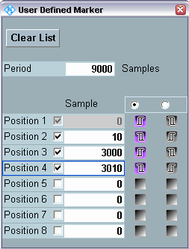
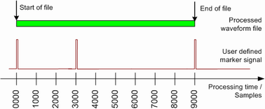

The "User Defined Marker" dialog defines a signal with up to 4 marker pulses relative to the processed waveform file. The marker signal can be used to trigger internal measurements or external devices, see "ARB Marker Signals".

Suppose that the processed file has a total length of 9000 samples. The user-defined marker settings above correspond to the following marker signal:

Restart markers, periodic markers To create a restart marker with a short pulse length, set the "Period" equal to the number of samples in the waveform file. Enable "Position 1" (at sample 0) and "Position 2" (e.g. at sample 1). To create a marker with n equidistant pulses across the waveform length, keep the "Position 1" and "Position 2" settings and reduce the "Period" by a factor of n. See also "Restart markers and user-defined markers in multi-segment mode". |
The dialog defines the marker events relative to the start of the processed waveform file (position 1, sample no. 0). The positions must be in ascending order. The "Start With" radio buttons invert the polarity of the entire generated marker signal. The entire marker signal (with the same polarity) is repeated after the selected "Period". The "Period" is often set equal to the length of the waveform file. It is independent of the enabled positions.
"Clear List" sets the "Period" equal to the number of samples in the loaded waveform file (1, if no file is loaded) and resets the remaining entries in the dialog.
Remote command: